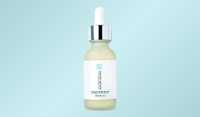

South Beach Collagen Scam or Legit? The Shocking Truth Exposed (2026 Review)

Click Here to Check Official Batch Availability →| Product Name: | South Beach Collagen |
| Editorial Score: | 4.8 / 5.0 ⭐⭐⭐⭐⭐ |
| Primary Purpose: | Targeted Bioactive Health & Vitality Formula (Natural Health & Dietary Supplement) |
| Manufacturing / Delivery: | c-GMP Certified, FDA-Registered Facility (USA) |
| Guarantee Shield: | 100% Risk-Free Money-Back Guarantee |
| Official Portal: | Verified Direct Manufacturer Website → |
South Beach Collagen Filler Serum Reviews 2026 | Is It Scam?
South Beach Collagen Filler Serum is a topical skincare serum formulated to support hydration, skin firmness, and a smoother, plumper-looking complexion.
South Beach Collagen Filler Serum | Quick Overview | |
Product Name | South Beach Collagen Filler Serum |
Product Type | Topical skincare serum |
Key Ingredients | Sodium Hyaluronate, Algae Extract, Rosemary Leaf Extract, Soluble Collagen, Citric Acid, Plankton Extract, etc. |
Key Benefits | Improves hydration, enhances skin plumpness, supports elasticity, brightens complexion, and smooths visible fine lines. |
Application Area | Face and neck |
Usage | Take 1–2 droppers daily, place in mouth, and swallow for consistent routine use. |
Pricing Options | One-time purchase ($59), Subscribe & save ($47.20 with 20% discount, flexible cancellation). |
Customer Rating | ⭐⭐⭐⭐⭐ 4.8/5 based on 2000+ reviews |
Money-Back Guarantee | 30-day satisfaction guarantee |
Side Effects | No side effects reported when used as directed |
Official Website | |
With years of experience in clinical nutrition, health coaching, and medical writing, Dr. Cassy has dedicated her career to helping customers achieve their health goals through evidence-based approaches.
In this review, she dives deep into South Beach Collagen Filler Serum’s formula, benefits, and real-world effectiveness to determine whether it’s truly worth your investment. Let’s get started!🚀
What Is South Beach Collagen Filler Serum?
South Beach Collagen Filler Serum is a topical skincare formulation formulated to support a smoother, more hydrated, and firmer-looking complexion through regular application.
It is developed as a facial serum intended for daily skincare routines and focuses on improving visible skin texture over time. The serum is used after cleansing and before moisturizing, allowing it to integrate into standard skincare steps without disruption.
It targets common skin concerns such as fine lines, uneven texture, and loss of firmness that typically appear with age or environmental exposure. The formulation is described as lightweight and easily absorbable, allowing it to spread evenly across facial and neck areas.
The product is positioned for customers seeking an approach to supporting skin appearance, with emphasis on hydration, elasticity, and surface smoothness through ongoing skincare use.
The Science Behind South Beach Collagen Filler Serum
South Beach Collagen Filler Serum is formulated based on dermal hydration science and topical peptide delivery concepts.
Its approach focuses on improving skin appearance by supporting moisture retention and surface elasticity. Hydration plays a central role, as well-hydrated skin tends to appear smoother and more supple.
The serum uses humectant-based mechanisms to attract water into the upper layers of the skin, temporarily enhancing plumpness and reducing the appearance of fine lines.
Additionally, collagen-supporting peptides are included to assist skin in maintaining structural resilience. Antioxidant components are formulated to lessen oxidative stress, which is a known factor in premature skin aging.
Overall, the scientific concept behind the serum revolves around hydration reinforcement, surface smoothing, and environmental protection for healthier-looking skin.
South Beach Collagen Filler Serum Ingredients
South Beach Collagen Filler Serum combines hydration agents, botanical extracts, and peptides for skin texture improvement and moisture retention to support daily use.
Sodium Hyaluronate
Sodium Hyaluronate attracts and binds moisture within skin layers, enhancing hydration levels while supporting a visibly plumper, smoother, and more lifted appearance with consistent topical application.
Algae Extract
Algae Extract helps improve skin tone and texture by supporting brightness and reducing visible signs of unevenness, while assisting in smoothing surface imperfections for a healthier-looking complexion.
Rosemary Leaf Extract
Rosemary Leaf Extract grants antioxidant support rich in vitamins A, B, C, and E, helping improve elasticity while supporting the reduction of puffiness and skin sensitivity concerns.
Soluble Collagen
Soluble Collagen supports skin structure by enhancing surface firmness and elasticity, helping maintain a youthful-looking complexion while reducing visible fine lines through consistent hydration and topical application.
Citric Acid
Citric Acid helps improve skin brightness and clarity while supporting smoother texture and refined pore appearance, contributing to a refreshed and more even-toned complexion with regular skincare use.
Plankton Extract
Plankton Extract supports skin protection against environmental stress by helping lessen oxidative damage, supporting defense against free radicals, and maintaining healthier-looking, more resilient skin under daily exposure conditions.
Benefits
South Beach Collagen Filler Serum grants multiple cosmetic benefits focused on hydration, texture refinement, and improved skin appearance with consistent application daily.
- Improves Skin Hydration Levels Naturally: Helps maintain moisture balance, supporting smoother and softer skin texture through consistent hydration retention across facial and neck areas.
- Supports Visible Reduction of Fine Lines: Enhances skin plumpness, which helps reduce the appearance of fine lines and improves overall surface smoothness gradually over time.
- Enhances Skin Elasticity and Firmness Appearance: Promotes improved elasticity, helping skin appear firmer and more lifted with regular use and continuous skincare routine integration.
- Brightens Uneven Skin Tone Effectively: Assists in improving skin radiance, supporting a more even-toned and refreshed complexion appearance after repeated application cycles.
- Helps Improve Overall Skin Texture Smoothness: Refines skin surface feel, reducing roughness and promoting a more polished and balanced complexion over consistent usage periods.
Pros
- Lightweight serum absorbs quickly
- Suitable for daily skincare use
- Hydration-focused formulation supports skin
- Easy integration into routines
- Designed for all skin types
- Supports visible skin smoothing
- Helps improve surface hydration
- Works with moisturizer layering
- Simple drop-based application method
- Gentle topical cosmetic formulation
- Suitable for morning and evening use
- Enhances skincare routine consistency
- Focuses on visible skin improvement
Cons
- Requires consistent long-term use
- Results vary between individuals
- Only available on the official website
How To Use?
- Application After Cleansing Routine Step: Apply South Beach Collagen Filler Serum on clean skin after washing face thoroughly, ensuring optimal absorption into freshly prepared skin surface layers.
- Layering Before Moisturizer Step Usage: Use a few drops across face and neck, gently spread evenly, then follow with moisturizer to lock in hydration effectively.
Are There Any Side Effects?
No side effects reported when using South Beach Collagen Filler Serum as directed. The formulation is designed for topical cosmetic use and is generally well tolerated by various skin types, including sensitive skin.
Its lightweight texture allows smooth application without causing discomfort or irritation under normal usage conditions. The serum is intended for regular skincare routines and integrates easily with cleansing and moisturizing steps.
Users typically apply a few drops to the face and neck without experiencing adverse reactions. It is formulated as paraben-free, sulfate-free, phthalate-free, and BPA-free, supporting a clean cosmetic approach. Consistent and proper application supports the best skincare outcomes.
Is South Beach Collagen Filler Serum a Scam or Legit?
Yes – South Beach Collagen Filler Serum is legit. It is a structured skincare product designed for topical cosmetic use with hydration and skin texture support.
Its formulation focuses on improving visible appearance through consistent application and is widely used within skincare routines.
No – South Beach Collagen Filler Serum is not a scam.The product operates within standard cosmetic skincare practices and follows established formulation principles used in topical serums. It is designed for regular use and supports visible skin enhancement goals without requiring complex application processes or procedures.
South Beach Collagen Filler Serum Customer Reviews & Complaints
South Beach Collagen Filler Serum steps up as a unique blend that has captured the hearts of many, boasting an impressive customer rating of ⭐⭐⭐⭐⭐ 4.8/5 from over 2000+ reviews.
⭐Positive Reviews
Collagen filler serum
I’m loving the collagen filler serum. Living in the desert of Arizona, I desperately needed something for my face to look hydrated, plump, and clear. And it does just that.
Karen B. ⭐⭐⭐⭐⭐
Skin has never looked better
At 65, wrinkles and skin drooping are issues. Since using the collagen filler the wrinkles around my eyes and mouth have definitely diminished, it’s like a facelift in a bottle. Don’t need much product, so you really get your money’s worth. Will definitely reorder.
Michele V. ⭐⭐⭐⭐⭐
Will definitely buy again
I have been using the collagen filler serum, and I use it on my face and neck. I love the difference in the lines that were on my forehead. It is lightweight, I like that the drops are small, a little goes a long way. It dries fast as well. I definitely will be buying again!!!!!! I do recommend buying it. LOVE COLLAGEN FILLER.
Valisa L. ⭐⭐⭐⭐⭐
⚠️Common Complaints
- Online-Only Availability Concern: Some users note that South Beach Collagen Filler Serum is primarily available through online purchase channels, limiting in-person retail accessibility options.
- Shipping Delay Experiences: A portion of customers report occasional delays in shipping and delivery times, depending on order volume, location, and fulfillment processing schedules.
Is It Worth Trying?
Yes, South Beach Collagen Filler Serum is worth trying. It grants a structured skincare approach focused on hydration support, texture refinement, and visible skin smoothing over time with consistent application routines.
The formulation is designed for regular use and integrates easily into daily skincare steps such as cleansing and moisturizing.
Overall, it offers a practical skincare addition for customers seeking hydration-focused improvement and visible refinement in skin appearance through steady, consistent use over time.
Why Is South Beach Collagen Filler Serum So Popular?
- Visible Skin Texture Improvement: Many users appreciate its ability to improve skin texture appearance, supporting a smoother, softer, and more refined facial surface with consistent use.
- Hydration-Focused Skin Support Formula: The serum is widely noted for delivering hydration support that helps maintain skin moisture balance and enhances the overall plumpness appearance.
- Easy Integration Into Daily Routine: Its lightweight consistency allows simple addition into skincare routines, fitting easily after cleansing and before moisturizing without complexity or heaviness.
- Consistent User Satisfaction Feedback: Many users report positive skincare experiences over time, especially related to improved smoothness, hydration, and refreshed skin appearance outcomes regularly.
Money Back Guarantee
South Beach Collagen Filler Serum includes a 100% satisfaction guarantee for 30 days. This allows users to try the product during regular skincare routines and evaluate its hydration and texture support benefits over time.
The policy is formulated to give enough time for consistent application and visible skin assessment. If the product does not meet expectations, users can request a refund within the 30-day period by contacting customer support.
The process is structured to be simple and user-friendly, focusing on straightforward evaluation without complicated steps.
Pricing
South Beach Collagen Filler Serum is available in standard purchase formats with flexible buying options and a routine-based savings structure.
One-Time Purchase
- One-time purchase price: $59
- Includes single purchase option for South Beach Collagen Filler Serum
- No recurring billing is involved
- Suitable for users preferring a standalone order
Subscribe & Save
- Subscription price: $47.20
- Saves: $11.80 (20% OFF)
- Option to cancel, pause, or modify anytime
- Includes gifts and cashback rewards
- Designed for ongoing skincare routine use
Where To Buy?
South Beach Collagen Filler Serum is available through its official website, where product details, usage guidelines, and purchasing information are provided in a structured format.
The official platform offers verified product descriptions, ingredient breakdowns, and application instructions to support informed usage decisions.
The ordering process is typically managed through the brand’s online portal, ensuring direct access to product variants and subscription options.
Conclusion
South Beach Collagen Filler Serum ⭐⭐⭐⭐⭐ holds a strong 4.8/5 rating from over 2000+ reviews, reflecting consistent user satisfaction with hydration and skin-smoothing support. The serum is formulated to help improve the appearance of fine lines, dryness, and uneven texture through regular daily application.
Its lightweight formula integrates easily into standard skincare routines while supporting a plumper and firmer-looking complexion over time.
The combination of hydration-focused active components and skin-conditioning extracts makes it suitable for customers seeking visible skincare enhancement without complicated usage steps.
Many users appreciate its smooth application and consistent skin-softening effects during continued use. Based on its formulation approach, customer feedback, and skincare-focused benefits, I highly recommend trying South Beach Collagen Filler Serum for maintaining hydrated, smoother, and healthier-looking skin daily.
.
Frequently Asked Questions
Can South Beach Collagen Filler Serum be used under makeup effectively?
Yes, it layers smoothly under makeup, helping maintain hydration and creating a smoother surface that supports even cosmetic application throughout the day consistently.
Does South Beach Collagen Filler Serum work for oily skin types?
It is suitable for oily skin, as its lightweight texture absorbs quickly without leaving greasy residue or disrupting natural skin oil balance during use.
Can it be combined with other skincare serums?
Yes, it integrates well with other serums, allowing layering within skincare routines focused on hydration, nourishment, and overall skin texture improvement goals.
Can it be used on the neck and decolletage areas?
Yes, it is suitable for neck and decolletage application, supporting consistent hydration and smoother skin texture across extended facial and upper body areas.
Is it compatible with sensitive skin routines?
Yes, it is generally suitable for sensitive skin types, designed for gentle application and consistent hydration support within daily skincare maintenance practices.
.